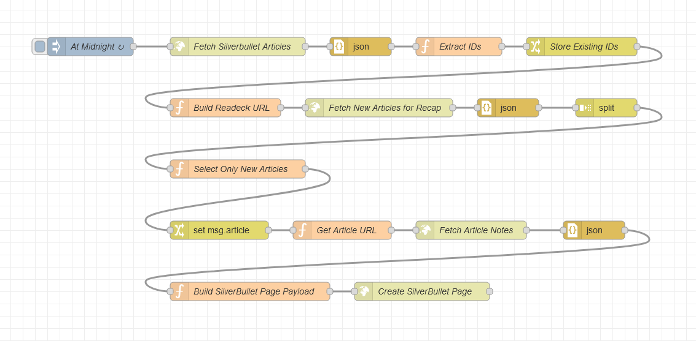
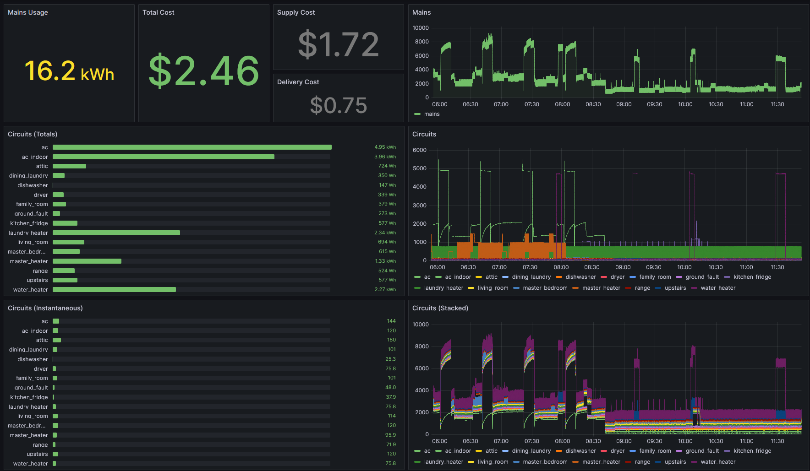
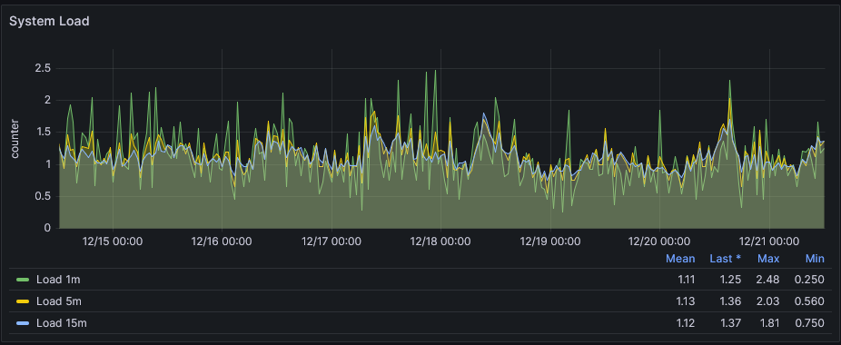

2024 Self-Hosting Update
I’m planning to make some changes to my self-hosting configuration in 2025, so I figured I would capture some details about my current set up for posterity.
Services⌗
First, let’s take a look at the various services that I’m running. I’ve organized these by “purpose”, with a catch-all category at the end. It’s worth noting that none of these services are critical. If Home Assistant or Z-Wave JS are down, the lights in the house still work. If Pi-Hole DNS is down, the router uses a backup public DNS server. These services do make my life better, but I can function without them.
Media⌗
- Jellyfin for media streaming
- *Arr Stack for media acquisition
Home⌗
- Home Assistant for basic smart home controls
- Frigate for security camera viewing and recording
- Z-Wave JS for integration with z-wave devices
Productivity⌗
- linkding for the SingleFile archiving feature
- Readeck for a “read later” list
- SilverBullet for notes, wiki, etc
Supporting Services⌗
- Backrest for backups
- File Browser for browsing archived PDFs and other files
- Gitea for version control
- Grafana for various home- and server-related dashboards
- Mosquitto for MQTT integration in Frigate, Z-Wave JS, and others
- Node-RED for several automated tasks based on schedules or MQTT triggers
- Pi-Hole for network-wide ad blocking and custom DNS
- Postgres for storing data, specifically energy metrics
- PostgREST for an easy way to send data to postgres from Node-RED
- Prometheus for storing metrics
- Samba for sharing files to Windows workstations
- Traefik for reverse proxying requests via subdomains
- Woodpecker CI for building and deploying services
Interesting Use Cases⌗
Most of this stuff is pretty vanilla, but there are some interesting integrations that I’ve built over the years that might be slightly more novel.
Reading and Notetaking Pipeline⌗
I use Readeck to maintain a list of articles I want to read. When I have some downtime, I’ll pick something from the list and use the built-in reader mode to read and highlight articles. When I’m finished reading an article, I add a “recap” tag to it.
Each night, a Node-RED flow runs and looks for new articles in Readeck with the “recap” tag. If it finds one, it creates a new page in SilverBullet with links to the original article, the reader-mode version stored in Readeck, and all of the passages that I highlighted. The new page also gets a “torecap” tag, causing it to show up in a query on my SilverBullet homepage.
This workflow makes it really easy to find something to read, highlight important ideas, and then come back later to reflect on the content and take more detailed notes.

Home Energy Monitoring⌗
I installed an Emporia Vue 2 so that I can record energy usage in my home at the circuit level. Thanks to some smart people on the internet, I was able to reflash the device so that it connects to my local MQTT broker (Mosquitto).
A Node-RED flow picks up all messages sent via MQTT from the Vue 2 and POSTs them to PostgREST, storing them in a postgres database. At this point I have ~4GB of metrics spanning around 2 years.
I then built a Grafana dashboard that allows me to see energy consumption and estimated cost.

Service Deployments⌗
I take a GitOps-based approach to my self-hosted services using a combination of Gitea, Woodpecker CI, and Ansible.
All of my services are deployed as Docker containers using Ansible’s community.docker.docker_container module. I like Ansible because its vault allows me to commit encrypted secrets to the repo so that literally everything is in one spot.
Rather than running Ansible manually, I run it in a Woodpecker pipeline using the librespace/ansible image. I pass docker.sock and some file paths through to the Woodpecker runner container as volumes so that Ansible can interact with Docker on the host machine. Deploying a new container is as easy as adding a new YAML file to the repo and pushing. Woodpecker will run the pipeline and deploy the new container via Ansible.
It’s a little janky and terribly insecure, but it’s easy to set up and has served me well.
Hardware⌗
I have a single desktop PC from ~2013 running all of my self-hosted services. It has an i5-4670K CPU and 16 GB of RAM. I also have a Z-Wave USB dongle for home automation and a Google Coral TPU USB dongle for Frigate’s object detection functionality.
For storage I have a 120 GB SSD boot drive, a 2 TB SSD for “normal” storage, and a 2 TB HDD for security camera recordings. Disk redundancy is on my to-do list for 2025.
Overall the system performs quite well for the workload. Offloading the object detection to the Coral TPU saves a ton of CPU.

Looking Forward⌗
I’d like to focus on two areas for improvement in 2025 - hardware and deployments.
I’m hoping to build out a new “server” for the services I’ve listed above. I’m not looking at anything too new or fancy, just a slightly newer CPU, a little more RAM, and some additional disks probably running ZFS for better redundancy.
If I can get that new machine in place, I’d like to repurpose the old PC as a true lab machine. I’ll probably install proxmox so that I can virtualize windows and linux as necessary for research projects.
I’d also like to replace my Gitea/Woodpecker/Ansible set up for deployments. I currently have my eye on Komodo. Hopefully I can use its resource syncing feature to keep all of the configuration in version control like I have now. Not 100% sure how I’ll handle secrets yet, so if you have any ideas - let me know!